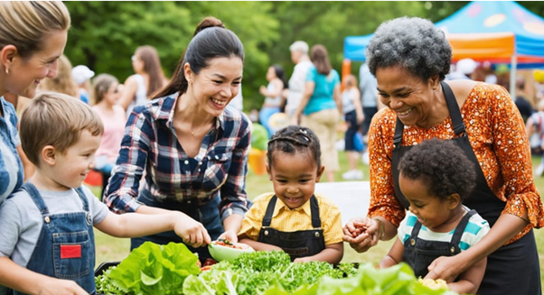
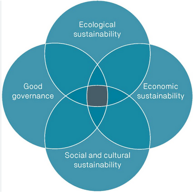
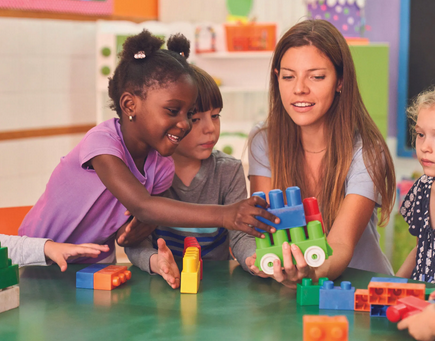
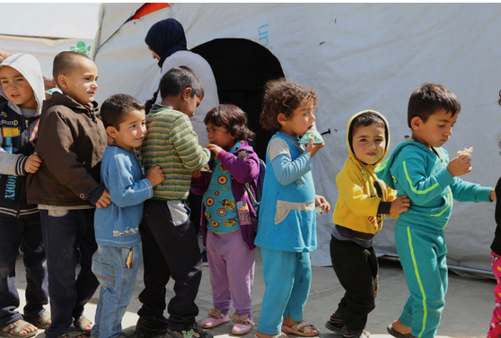
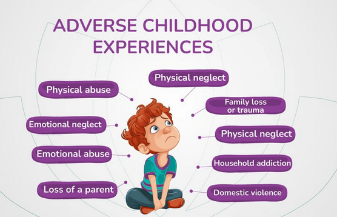
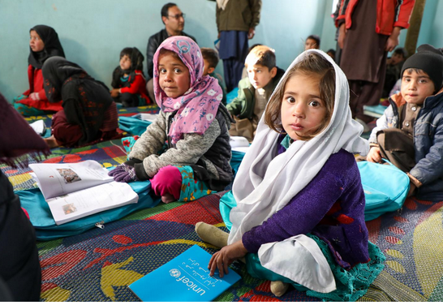
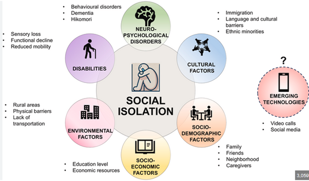
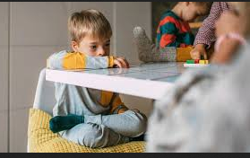

Early childhood education in Australia takes place within a rich tapestry of diverse family structures, cultural identities, social conditions, and community experiences. As educators, we are positioned at the frontline of children’s wellbeing, learning, and development. Understanding the complexity of the environments that shape children’s lives is essential for providing equitable, responsive, and meaningful early learning experiences.
Figure 1: Working With Children, Families, and Communities
This digital portfolio has been designed as a comprehensive professional resource to support educators in navigating the realities faced by children and families in contemporary society. It brings together current research, sociological theory, national and state policy directions, and evidence-based strategies that promote inclusive and culturally safe practice.
Across five major contexts:
This website presents:
The goal is to support educators to foster inclusive, equitable, and relationship-centred practice aligned with the Early Years Learning Framework (EYLF) and National Quality Standard (NQS).
Across the portfolio, you will find clear explanations of each context, practical strategies for creating supportive learning environments, and accessible tools for building strong partnerships with families and community organisations. The resources included—such as children’s books, videos, educator toolkits, and support services—have been carefully selected to build empathy, foster resilience, and deepen understanding among both educators and young children.
This website is grounded in the principles of the Early Years Learning Framework (EYLF) and the National Quality Standard (NQS), emphasising the importance of belonging, being, and becoming; cultural responsiveness; collaborative partnerships; and holistic approaches to wellbeing. Whether you are an early career educator, a student, or an experienced professional seeking fresh insight, this resource aims to enrich your practice and strengthen your capacity to respond confidently and compassionately to the diverse needs of the children and families you support.
We invite you to explore each section, reflect on your own professional identity, and draw inspiration from the strategies, knowledge, and stories shared throughout. Together, we can contribute to early childhood environments that are inclusive, empowering, and deeply connected to the communities we serve.
In my viewpoint, economic hardship among families is expressed through poverty, housing stress, insecure employment, and financial hardship represents a critical context shaping early childhood experiences in Australia.
Economic disadvantage means limited access to essential resources such as stable housing, nutritious food, health care, transport, and learning materials. According to the latest research by (Bartlett & Smith, 2019) nearly one in six Australian children — over 950,000 children — are projected to live below the standard poverty line in 2025, reflecting a sharp increase driven by rising rents, cost-of-living pressures, and inadequate income support.
The key concept I have extracted and developed from the literature review is that poverty in early childhood is not only about income shortfall. As mentioned in (Australia, B., 2022), it intersects strongly with housing insecurity and rising living costs, which together create unpredictable and unstable living conditions for children and families. Secure, affordable housing is especially relevant: the Australian Institute of Health and Welfare (AIHW) reports that in 2016, more than one-fifth of children aged 0–14 lived in households experiencing housing stress, with over half of children in one-parent households particularly affected (Laletas, Reupert, & Goodyear, 2022).
This economic context is deeply relevant to early childhood education because early years are formative — material stability underpins children’s capacity to thrive, to form secure attachments, and to engage meaningfully in ECEC (Early Childhood Education and Care). Where families struggle financially, children may lack consistent access to preschool, nutritious meals, stable routines, and educational resources.
According to my understanding and observation, children growing up under economic hardship face a spectrum of developmental, social, and educational disadvantages. Material deprivation undermines their physical wellbeing, limited access to healthy food, healthcare, and stable housing can impair growth, health, and sense of security.
Research (Fox & Hemmeter, 2009) indicates that poverty during childhood leaves “scarring effects”: children who experience childhood poverty are up to 8 percentage points more likely to remain in poverty as adults, and up to 11 percentage points less likely to be employed later in life.
For early childhood services, this means children from low-income or housing-unstable families may have irregular attendance, arrive tired or hungry, show stress or behavioural regulation difficulties, or lack learning resources. Educators must recognise these influences and adapt teaching, routines, and supports accordingly — particularly to promote equity and inclusion and to avoid exacerbating disadvantage.
In response to rising childhood poverty and housing stress, national and state-level policies have sought to cushion financial hardship and improve accessibility of early childhood services.
Notably, the Child Care Subsidy (CCS) aims to make early childhood education more affordable for low- and middle-income families. However, reports from the Australian Council of Social Service (ACOSS) and advocacy groups have flagged that income support payments (e.g., JobSeeker, Youth Allowance, Parenting Payment) remain insufficient. It is considered that many households receiving these supports remain well below the poverty line (Australians, O., 2024).
In my viewpoint, early childhood educators and services can adopt the following five evidence-based strategies to support children and families affected by economic hardship:
According to my understanding, the following five organisations or professionals are particularly important for supporting families facing economic hardship:
ECEC services can refer families, co-host support sessions, share information, and build trust-based relationships with these organisations — creating a network of support that extends beyond early learning.
These resources can be used by educators to build empathy, normalize diversity in family circumstances, promote social-emotional learning, and support children’s resilience. They also provide conversation starters for families and educators to discuss hardship, kindness, equity, and inclusion in developmentally appropriate ways.
In my viewpoint, cultural and diversity contexts encompass the complex experiences of children and families from First Nations communities, immigrant backgrounds, and refugee or multicultural households. Cultural identity, language, values, and traditions significantly influence children’s development, learning, and engagement in early childhood education. According to my understanding and observation, educators must recognise both the strengths and the challenges these families face to foster inclusive and culturally safe learning environments.
The key concept I have extracted and developed from the literature review is that cultural diversity is dynamic and multifaceted. First Nations families experience ongoing impacts of colonisation, intergenerational trauma, and systemic inequities. Immigrant and refugee families often face additional challenges such as language barriers, resettlement stress, and navigating unfamiliar education systems. These cultural contexts intersect with socioeconomic factors, geographic location, and health determinants, influencing children’s participation in early childhood programs.
Sociological theories provide a framework for understanding these experiences. Sociocultural theory highlights how learning is mediated through social interactions and cultural tools (Australians, O., 2024), while postcolonial and anti-bias frameworks guide educators to critically reflect on power, privilege, and inclusion in curriculum design. In my viewpoint, these theories support the development of practices that respect cultural identity, promote equity, and empower families as partners in early learning.
According to my understanding and observation, cultural diversity influences children’s language development, social-emotional skills, identity formation, and learning engagement. Children from multilingual backgrounds may develop cognitive flexibility but may also encounter challenges in navigating language differences within early learning environments. First Nations children benefit from culturally affirming practices that acknowledge connection to land, kinship, and community, yet systemic marginalisation may impact confidence and participation. Refugee children may carry trauma experiences, requiring trauma-informed strategies alongside culturally responsive pedagogy (Department of Education, Australian Government, 2021).
Families in these contexts may face barriers to engagement, such as lack of familiarity with the Australian education system, language differences, or prior experiences of discrimination. In my viewpoint, early childhood educators play a pivotal role in building relationships, fostering trust, and co-creating learning experiences that honour each child’s cultural heritage and identity.
The key concept I have extracted from recent literature is that policies guide inclusive practice while acknowledging cultural rights and equity. For First Nations families, Closing the Gap initiatives focus on improving health, education, and wellbeing outcomes. State Reconciliation Action Plans encourage services to embed cultural awareness and engagement with Elders. Policies supporting multicultural and refugee families include the Multicultural Access and Equity Policy and Settlement Services International frameworks, which aim to improve access to education and early learning programs (Australians, O., 2024).
Statistics show that in 2021, over 30% of children aged 0–5 in Australia had at least one parent born overseas, and approximately 3.3% of children were from humanitarian refugee backgrounds (Evans, 2023). These figures highlight the importance of culturally responsive practice in ensuring equitable participation.
In my viewpoint, five evidence-based strategies can support culturally diverse children and families:
According to my understanding, collaboration enhances outcomes for children and families:
In my viewpoint, these resources provide children with relatable narratives, foster respect for diversity, and equip educators with practical strategies to nurture inclusive early learning environments.
In my viewpoint, children’s health and wellbeing are profoundly influenced by the family and community environment, particularly when parents or caregivers experience mental illness, substance use, trauma, or grief. The key concept I have extracted and developed from the literature review is that parental wellbeing directly impacts children’s physical, emotional, and cognitive development. In my understanding and observation, these health and wellbeing challenges create both immediate and long-term vulnerabilities, requiring early childhood educators to adopt trauma-informed, responsive, and supportive practices.
Sociological perspectives, including Bronfenbrenner’s ecological systems theory (2021), highlight that children’s development is shaped by interactions across multiple environmental layers, from family to broader societal contexts. Parental mental illness, for example, may disrupt routines and emotional availability, influencing children’s attachment, behaviour, and social engagement (Bartlett & Smith, 2019). Substance use in the household can further exacerbate instability and risk, leading to neglect or inconsistent caregiving. Trauma, grief, and abuse may co-occur with these challenges, underscoring the need for early identification and intervention.
Contemporary research underscores that these challenges are prevalent in Australia. According to the Australian Institute of Health and Welfare (Australians, O., 2024), approximately 17% of Australian parents report experiencing a mental health condition, and around 1 in 10 children are exposed to parental substance use. The evolving nature of these issues is also influenced by societal stressors such as economic hardship, family separation, and community-level stress, which intersect with health and wellbeing outcomes.
According to my understanding, children exposed to parental mental illness, substance misuse, trauma, or abuse may face disruptions in development, learning, and wellbeing. Emotional regulation difficulties, anxiety, social withdrawal, and behavioural challenges are common. Cognitive development may also be affected, including attention, memory, and executive function, which can impact early learning outcomes (Odell, 2017).
Families experiencing these issues often face stigma, isolation, and difficulty engaging with services. Parental mental illness or substance use can limit caregivers’ capacity to maintain consistent routines, provide stimulating learning experiences, or engage with early childhood educators. In my viewpoint, early childhood services serve as a protective factor, offering safe environments, nurturing relationships, and consistent routines that buffer children against adverse experiences.
In my understanding and observation, Australian policy frameworks provide critical guidance and support for children and families experiencing health and wellbeing challenges. National initiatives such as Headspace, Family Mental Health Support Services, and National Drug Strategy Programs aim to address parental mental illness and substance use while supporting child development. Child protection legislation across states ensures children at risk of abuse or neglect receive timely intervention (Barrett, et al., 2024).
Research highlights that integrating health services with early childhood education enhances children’s outcomes. For instance, collaborative programs that include mental health professionals, social workers, and educators foster holistic support for families (Cigdem‐Bayram, Nolan, Rama, & Bieske, 2025). Data also indicate that children in households affected by parental mental illness or substance use are at significantly higher risk for developmental and emotional difficulties, emphasizing the urgency of coordinated policy and practice responses.
In my viewpoint, evidence-based strategies in early childhood education can mitigate the impacts of health and wellbeing challenges:
According to my understanding, the following organisations are essential collaborators:
These resources help children articulate feelings, develop coping strategies, and build resilience, while supporting educators to provide developmentally appropriate emotional guidance.
In my viewpoint, crisis and emergency contexts, including climate events, natural disasters, family violence, and displacement, significantly impact children, families, and early childhood education. These crises disrupt routines, safety, and stability, placing children at risk of trauma and stress. The key concept I have extracted and developed from the literature review is that children are particularly vulnerable to environmental and familial crises because they rely on consistent care, secure attachment, and predictable learning environments (Australians, O., 2024).
Recent research highlights the growing frequency and severity of climate-related emergencies in Australia, such as bushfires, floods, and heatwaves, which have direct and indirect effects on children’s wellbeing (Laletas, Reupert, & Goodyear, 2022). Family violence, including domestic abuse and child maltreatment, creates unsafe home environments that compromise emotional security and development (Australians, O., 2024). Displacement, whether due to natural disasters, conflict, or economic stress, interrupts continuity in education and social networks, exacerbating stress and social isolation.
Sociological perspectives, including ecological systems theory (Cigdem‐Bayram, Nolan, Rama, & Bieske, 2025), emphasise that children’s development is shaped by multiple environmental layers. Crises disrupt these layers, affecting family functioning, community support, and access to services. Trauma-informed frameworks guide early childhood educators in recognising and responding to children’s experiences in these contexts.
According to my understanding and observation, crises have profound developmental, emotional, and social consequences for children. Exposure to trauma and disruption can result in anxiety, sleep disturbances, behavioural difficulties, and challenges in emotional regulation. Cognitive outcomes may be affected, particularly when learning routines are interrupted or children are unable to access consistent early learning opportunities (Brewer-Smyth, 2022).
Families facing crises often experience compounded stressors, including financial strain, relocation, or lack of social support. Parents may struggle to provide stability, which can indirectly affect children’s wellbeing and engagement in early childhood education. In my viewpoint, early childhood services function as stabilising environments, offering predictable routines, supportive relationships, and educational continuity.
In my viewpoint, Australian policy frameworks provide guidance and support for children and families affected by crises and emergencies. The National Strategy for Disaster Resilience (2022) outlines initiatives to protect communities, including children, during natural disasters. State-level family violence frameworks, such as Victoria’s Ending Family Violence Strategy, emphasise early intervention, child protection, and support services. Emergency response policies also prioritise vulnerable populations, including children, ensuring access to safe accommodation, counselling, and educational continuity (Brewer-Smyth, 2022).
Recent data indicate that during the 2019–2020 bushfires, approximately 80,000 children were directly affected, highlighting the urgency for coordinated policy and service responses (Derman-Sparks, Edwards, & Goins, 2020). Similarly, family violence reports show sustained high incidence rates, reinforcing the need for trauma-informed interventions in early childhood settings.
The key concept I have developed from literature is that early childhood educators must employ trauma-informed, resilience-building strategies to support children experiencing crises:
According to my understanding, effective responses require collaboration with specialised organisations:
These resources help children express feelings, build resilience, and understand crises in a developmentally appropriate way, while equipping educators with practical strategies to support emotional and social wellbeing.
In my viewpoint, the diversity of family and community contexts in Australia is both vast and dynamic, encompassing economic, social, cultural, health, and crisis-related dimensions. Families vary in structure, culture, language, and lived experiences, which continuously evolve due to societal changes, migration, policy shifts, and environmental challenges.
The key concept extracted from the literature is that early childhood educators must adopt a flexible, culturally responsive, and trauma-informed approach to meet the unique needs of each child and family. In my understanding and observation, recognising this diversity goes beyond acknowledging differences; it involves actively valuing, including, and empowering families within early learning environments. The evolving nature of these contexts requires ongoing professional learning, reflective practice, and collaborative partnerships to ensure that all children are supported, resilient, and able to thrive in inclusive, nurturing educational settings.
Social Contexts [Social and Geographical Isolation, Divorce, and Out-of-Home Care]
Understanding the Context
In my viewpoint, social contexts such as family separation, social isolation, and out-of-home care profoundly shape children’s experiences in early childhood. Social or geographical isolation can occur when families reside in rural or remote areas, face limited transport, or lack social networks (Australians, O., 2024). Divorce and family separation create relational and emotional disruptions, while children in out-of-home care (OOHC) often face instability and trauma. According to my understanding and observation, these factors intersect and intensify vulnerability, influencing children’s development, engagement, and wellbeing in early learning settings.
The key concept I have extracted and developed from the literature review is that social contexts operate not only at the family level but also at the community level. For example, children in geographically isolated communities may have limited access to preschool programs, early intervention services, or social networks that promote resilience (Australians, O., 2024). Similarly, family separation can lead to economic strain, emotional stress, and inconsistent caregiving, which affects children’s attachment patterns and participation in educational routines (Bartlett & Smith, 2019). OOHC represents a particularly complex context: children placed in foster care or kinship arrangements often have experienced trauma, neglect, or abuse, requiring specialised approaches to education and care (Barrett, et al., 2024).
Impact on Children and Families
In my viewpoint, social isolation and family disruption influence children’s development across multiple domains. Emotionally, children may exhibit anxiety, low self-esteem, or behavioural difficulties, reflecting the stress and instability in their home lives. Cognitive and learning outcomes can be affected by disrupted routines, limited stimulation, or inconsistent educational engagement (Brewer-Smyth, 2022).
Socially, children may struggle to form and maintain peer relationships due to relational instability or limited opportunities for social interaction. Families also experience increased stress, reduced parenting capacity, and challenges in engaging with early childhood services. In my understanding, early childhood services play a critical role in buffering these risks by providing stability, nurturing relationships, and promoting inclusive participation (Olsson, Bergström, Välikoski, Karlsson, & Skoog, 2025).
Figure 2: Impact of divorce on children
Social Policy and Australian Responses
According to my understanding and observation, Australian policies aim to support children and families in social contexts through targeted interventions. The National Framework for Protecting Australia’s Children 2020–2030 provides guidelines for child protection, while the Family Law Act 1975 (amended 2021) addresses parental responsibilities and access arrangements. State-level OOHC policies, such as Victoria’s Out-of-Home Care Policy Framework, emphasise child safety, stability, and permanency planning (Odell, 2017).
Research also highlights the increasing prevalence of parental separation, with one in three children experiencing parental divorce by age 15 (Cigdem‐Bayram, Nolan, Rama, & Bieske, 2025). These data illustrate the urgency for early childhood services to implement responsive and evidence-based strategies to support affected children.
Strategies for Practice
The key concept I have developed from the literature is that early childhood educators must provide continuity, emotional support, and inclusive engagement to mitigate the impacts of social contexts. Five evidence-based strategies include:
Community and Professional Partnerships
In my viewpoint, partnerships enhance capacity to support children in social contexts. Five key organisations and professionals include:
Resources for Educators and Children
Projects
Children’s Storybooks (0–5 years)
Children’s Videos / Shows / Podcasts
Discussion
In my viewpoint, these resources allow educators to create discussions around family diversity, promote coping strategies, and foster resilience in children experiencing social challenges (Australia, B., 2022).